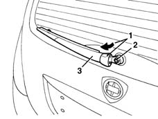
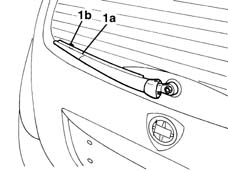

5050C34 rear wiper arm with blade - r+r
- Path
- Procedures > 50 AUXILIARY UNITS > 5050 SCREEN WASHERS AND HEADLAMP WASH/WIPE > 5050C rear wash/wipe > 5050C34 rear wiper arm with blade - r+r
- Kind
- repair procedure (removal / refitting; the operation number is the code)
- Applies to
- all engines; all production periods
- Interactive page
- https://sloeber94.github.io/elrnDB-lYpsln/en/#/2429358
Applies to: all engines; all production periods
 Removing
Removing
 Refitting
Refitting1. Open the lid.
2. Undo the nut.
3. Remove the wiper arm.

Applies to: all engines; all production periods
Refitting
RemovingCheck that the wiper blade and arm are undamaged
1. Position the arm in its seat, checking that the wiper (1a) is aligned with the reference (1b) on the glass.

Applies to: all engines; all production periods
Tighten the nut.
Close the lid.
Check that the wiper works properly.